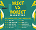
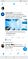
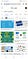

Social currency, professional currency and sharing


If you market a professional services, it will be often better to target the closest persons connected to the ones you target. If these persons receive your marketing message maybe they will transfer it to your target who will be more likely to look it. We are more aware of thing coming from our friends, family and colleagues than from businesses. For example today I saw this tweet

And thought that it could interest one of my friends who is an expert in structural engineering for buildings. I just took the tweet opened my WhatsApp and send it to him. In my point of view this tweet is a professional currency for him and the act of sharing my increase my social currency.
Often indirect marketing is better than marketing directly to your audience.
